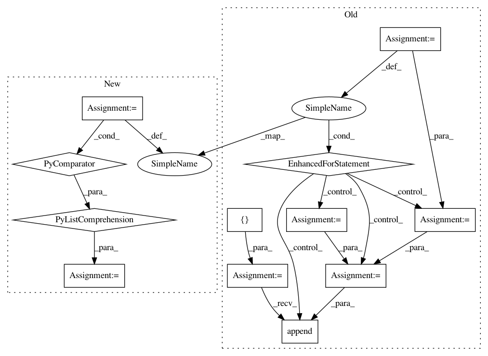

aab843410171a11dfd721b1d9cc980bee4420427,dask_image/ndfourier/_utils.py,,_get_freq_grid,#Any#Any#Any#,15
Before Change
ndim = len(shape)
freq_grid = []
for i in irange(ndim):
sl = ndim * [None]
sl[i] = slice(None)
sl = tuple(sl)
freq_grid_i = _compat._fftfreq(shape[i], chunks=chunks[i])
freq_grid_i = freq_grid_i.astype(dtype)
freq_grid_i = freq_grid_i[sl]
for j in itertools.chain(range(i), range(i + 1, ndim)):
freq_grid_i = freq_grid_i.repeat(shape[j], axis=j)
freq_grid.append(freq_grid_i)
freq_grid = dask.array.stack(freq_grid)
return freq_grid
After Change
assert (issubclass(dtype, numbers.Real) and
not issubclass(dtype, numbers.Integral))
freq_grid = [
dask.array.fft.fftfreq(s, chunks=c).astype(dtype)
for s, c in izip(shape, chunks)
]
freq_grid = dask.array.meshgrid(*freq_grid, indexing="ij")
freq_grid = dask.array.stack(freq_grid)
return freq_grid
In pattern: SUPERPATTERN
Frequency: 3
Non-data size: 12
Instances
Project Name: dask/dask-image
Commit Name: aab843410171a11dfd721b1d9cc980bee4420427
Time: 2018-09-02
Author: jakirkham@gmail.com
File Name: dask_image/ndfourier/_utils.py
Class Name:
Method Name: _get_freq_grid
Project Name: dask/dask-image
Commit Name: f9aea094643fb3240193b0bc0f1908d5b84d82ab
Time: 2018-09-30
Author: jakirkham@gmail.com
File Name: dask_image/ndmeasure/__init__.py
Class Name:
Method Name: center_of_mass
Project Name: WZBSocialScienceCenter/tmtoolkit
Commit Name: eb13c2ea02e0e06c06b288e3590ce04cc014ba04
Time: 2019-03-22
Author: markus.konrad@wzb.eu
File Name: tmtoolkit/topicmod/tm_gensim.py
Class Name: MultiprocEvaluationWorkerGensim
Method Name: fit_model